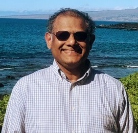

Large amounts of imaging data from the brain are now available to better understand the brain and “reverse engineer” the brain. Signal processing and machine learning can unravel mysteries of the brain and can be used to diagnose various brain disorders. This talk will describe analysis of functional magnetic resonance imaging (fMRI) data collected from healthy subjects at the Center for Magnetic Resonance Research (CMRR) of the University of Minnesota (UMN) as part of the U.S. Human Connectome Project (HCP), analysis of electroencephalogram (EEG) for prediction and detection of seizures from publicly available datasets, analysis of magnetoencephalogram (MEG) data collected at the Minneapolis VA hospital from subjects with schizophrenia, and analysis of fMRI data collected at the UMN from adolescents with psychiatric disorders and healthy controls. One goal of the analysis is to extract appropriate features and design appropriate classifiers. Sub-graph entropy, a measure of static connectivity, is introduced to discover predictive subnetworks that are used to classify task vs. no-task or to discriminate two tasks from the task fMRI data collected from the healthy subjects from HCP. Tensor decomposition approach is used to extract dynamic brain connectivity and is used to predict gender and fluid intelligence of the healthy subjects from HCP. About 1% of world population suffer from epilepsy. Spectral-domain features, such as spectral powers in different bands and ratios of spectral power of two different bands extracted from EEG and intra-cranial EEG, are used to predict and detect seizures with high sensitivity and specificity. Band-power ratios of MEG during word processing task are used as features to identify subjects with schizophrenia. Resting-State fMRI data are used to design classifiers for identifying three types of psychiatric disorders among adolescents: borderline personality disorder (BPD), obsessive compulsive disorder (OCD) and major depressive disorder (MDD) using spectral-domain features and static brain connectivity. In summary, extracting appropriate biomarkers using spectral-temporal-spatial signal processing approaches and classifying states using machine learning approaches can assist clinicians in predicting and detecting various brain disorders and to understand more about the healthy brain. These biomarkers can be tracked to design personalized therapy and effectiveness of therapy by closed-loop drug delivery or closed loop neuromodulation, i.e., brain stimulation either by invasive or non-invasive means using electrical or magnetic stimulation.

Speaker Biography:
Keshab K. Parhi received the B.Tech. degree from the Indian Institute of Technology (IIT), Kharagpur, in 1982, the M.S.E.E. degree from the University of Pennsylvania, Philadelphia, in 1984, and the Ph.D. degree in EECS from the University of California, Berkeley, in 1988. He has been with the University of Minnesota, Minneapolis, since 1988, where he is currently Distinguished McKnight University Professor and Edgar F. Johnson Professor in the Department of Electrical and Computer Engineering. He has published over 650 papers, has authored the textbook VLSI Digital Signal Processing Systems (Wiley, 1999) and coedited the reference book Digital Signal Processing for Multimedia Systems (Marcel Dekker, 1999). Dr. Parhi is widely recognized for his work on high-level transformations of iterative data-flow computations and for his research on hardware accelerators for signal processing and networking systems. His current research addresses VLSI accelerators for signal processing and machine learning including deep learning, data-driven neuroscience, hardware security and molecular computing. Dr. Parhi is the recipient of numerous awards including the 2003 IEEE Kiyo Tomiyasu Technical Field Award, the 2017 Mac Van Valkenburg award, the 2012 Charles A. Desoer Technical Achievement award and the 1999 Golden Jubilee medal from the IEEE Circuits and Systems Society, and the 2004 F. E. Terman award from the American Society of Engineering Education. He served as the Editor-in-Chief of the IEEE TRANSACTIONS ON CIRCUITS AND SYSTEMS —PART I (2004-2005 term), as a distinguished lecturer for the IEEE Circuits and Systems society during 1996-1998 and 2019-2021, and was an elected member of the Board of Governors of the IEEE Circuits and Systems society from 2005 to 2007. He is a Fellow of IEEE (1996) and the AAAS (2017).